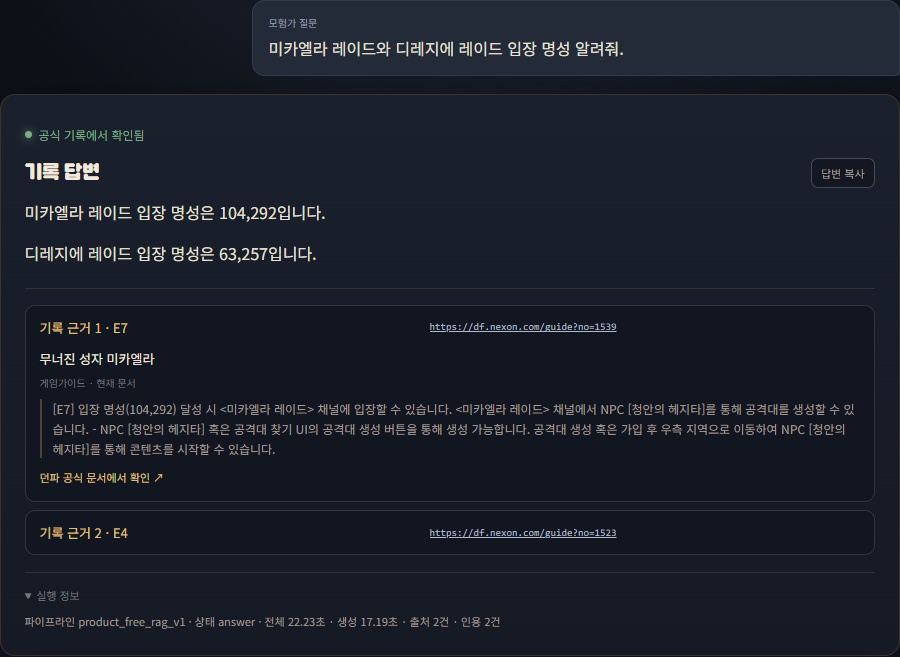

실제 데모 화면
질문 → 답변 → 공식 문서 근거 확인
DNF 공식 문서 기반 QA/RAG 시스템
흩어진 공식 문서에서 근거를 찾고, 답변과 출처 위치를 함께 보여주는 질의응답 시스템을 설계했습니다.
연구 질문
공식 근거를 제시하면서, 근거가 부족할 때 답변을 멈출 수 있는가?
검증 설계
개발 질문과 최종 평가 질문을 분리하고 자동 평가 뒤 사람이 원문을 대조했습니다.
관찰 결과
문서 처리와 평가 과정의 자동화 테스트 1,378건은 통과했지만 사람 검수는 20/32였습니다.
연구 판단
사전에 정한 80% 적용 기준에 미달해 기본 적용을 보류하고 실패 원인을 기록했습니다.